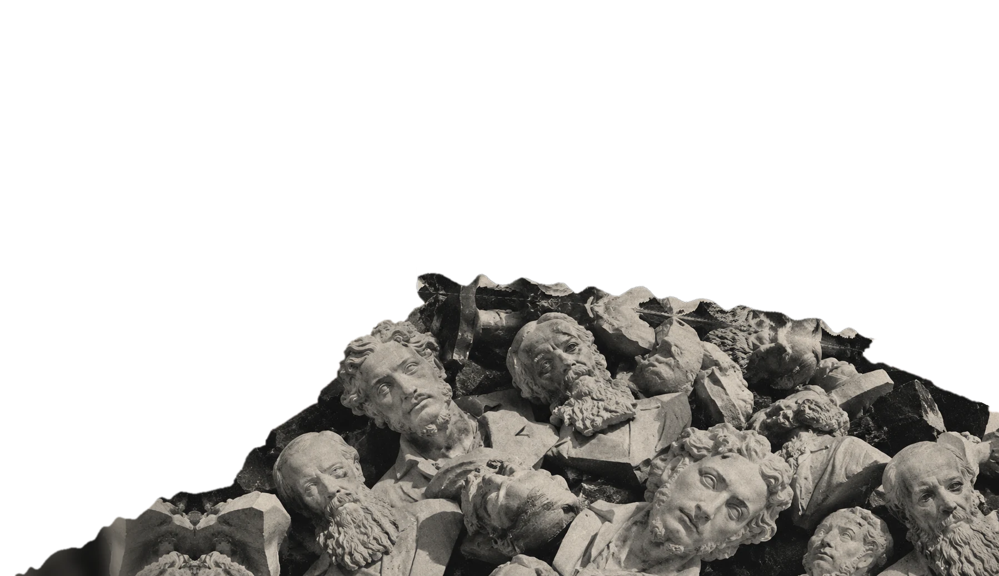
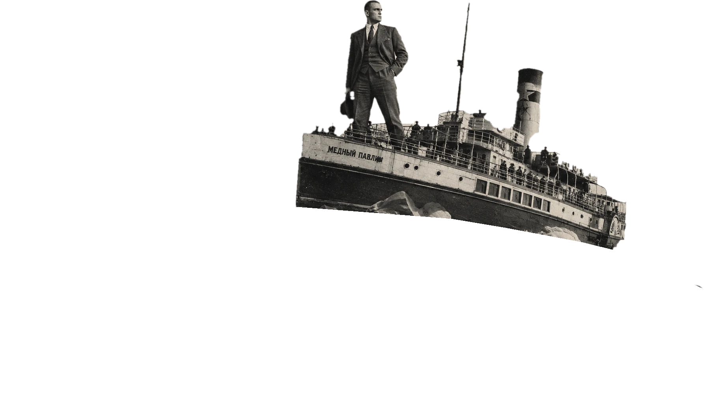

Вы любите авангард?
Когда авангард появился, публика приняла его не с радостью. Футуристов считали хулиганами, а «Чёрный квадрат» на выставке 1915 года вызвал у зрителей недоумение. Отторжение пришло раньше признания.
Начнём с манифеста, который сам вызвал отторжение.
1912. Пощёчина общественному вкусу
В конце 1912 года группа молодых поэтов выпускает сборник с манифестом. Он называется «Пощёчина общественному вкусу». В нём предлагается сбросить Пушкина, Достоевского и Толстого «с парохода современности». Среди подписавших — Владимир Маяковский.
В 1913 году появляются первые скандальные стихи Маяковского. Публика воспринимает его как хулигана. В 1913-м он — тот, от кого публика отвернулась.



Чтобы сбросить Пушкина, манифесту пришлось сначала назвать его по имени. Жест «против всех» ориентируется на то, что все уже считают ценным. Расстояние до большинства задано тем, где стоит большинство. Если бы большинство сдвинулось, сдвинулась бы и эта метка.
Две линии рядом
Дальше идём по годам. Слева линия Маяковского, справа линия Малевича. Над текстом всегда видно, в каком статусе каждый из них сейчас.
Малевич: —
В декабре в петербургском театре «Луна-парк» идут две футуристические постановки, в соседние дни. Казимир Малевич оформляет оперу «Победа над Солнцем». Владимир Маяковский играет главную роль в своей трагедии. Они ещё не знают, что через двадцать лет их будут оценивать по-разному.проверить даты
Начинается война, и они делают одно дело. В издательском проекте «Сегодняшний лубок» Малевич рисует агитационные лубочные листы, а Маяковский пишет к ним подписи. Два человека, которых публика считает хулиганами, вместе делают плакаты против германцев.
На «Последней футуристической выставке картин „0,10“» Малевич показывает «Чёрный квадрат». Он висит в «красном углу», там, где в русском доме обычно висела икона. Публика встречает его недоумением. Критик Александр Бенуа называет его иконой, которую футуристы предлагают взамен мадонн. В том же году выходит «Вам!» Маяковского, ещё один скандал.
Вернитесь к своей метке. Если бы вы стояли у этого квадрата в 1915-м, куда бы она сдвинулась?
После революции меняется вопрос. Раньше авангард убедить публику не успевал. Теперь спрашивает не публика, а заказчик. Малевич оформляет «Мистерию-буфф», пьесу Маяковского о революции. Впервые оба работают на новую власть, и это всё ещё один спектакль.проверить год
Маяковский делает «Окна РОСТА» — плакаты государственного телеграфного агентства, которые висят в витринах. Малевич в Витебске делает агитационные плакаты вместе с учениками (УНОВИС).проверить Два пути расходятся, а заказчик у них один.
Ленин пишет Луначарскому о поэме Маяковского «150 000 000». Заказчик говорит «нет», даже тем, кто уже на него работает.проверить год
Тот же Ленин читает в «Известиях» стихотворение Маяковского «Прозаседавшиеся». Похвала идёт за конкретную вещь, а не за всё направление.проверить
Закрывают институт Малевича.
Малевича арестовывают, его работы конфискуют. В том же году выставка Маяковского «20 лет работы» проходит без поддержки официальных литературных кругов.проверить
До начала 1930-х в искусстве существуют разные группы, и они спорят между собой. В 1932 году художественные объединения распускают. В 1934-м на съезде писателей социалистический реализм объявляют методом. Авангард перестаёт быть направлением и становится «не тем».
Если всё решается сверху, что тогда меняется в отношении публики?
17 декабря «Правда» публикует резолюцию Сталина. В тот же день Триумфальная площадь в Москве получает имя Маяковского.
Проследите за линией целиком. 1913: хулиган. 1921: «как не стыдно». 1922: частичная похвала. 1935: «лучший». Стихи за эти годы не переписывались. Поменялся тот, кто решает, что считать ценным.
Рядом линия Малевича остаётся в тени. Такой резолюции он не получил. Возвращение «Чёрного квадрата» в музеи и в разговор займёт десятилетия.вставить даты
Признание пришло не от публики, которая вдруг поняла. Оно пришло сверху, как решение.
Сегодня
Вернёмся к вопросу из начала. Вы любите авангард? Поставьте метку ещё раз и сравните её с первой.
В двух рабочих программах по литературе для 11 класса, которые мы посмотрели, Маяковскому отведено 4 и 7 часов, футуризму — час, а слова «авангард» нет совсем. Малевич упомянут только рядом с кубистами. Это две программы, а не вся школа.
Почему отношение к авангарду такое, какое есть, мы не знаем: данных именно об авангарде у нас нет. Есть две гипотезы, и они вытекают из того, что вы только что прочитали.
- Авангард стал для людей «знаком протеста». Оценивают они протест, а не саму работу.
- У читателя нет «переводчика». Школа авангард почти не объясняет, поэтому ответ приходит от чужих мнений.
Есть слово для того, что произошло с авангардом на этом пути: рекуперация. Так называют ситуацию, когда жест протеста возвращается в ту систему, которую оспаривал, и начинает на неё работать. Посмотрите на свою метку в начале и в этом кадре. Если они разные, нужно ли спрашивать, что изменилось: сомнения или то, кто стоял рядом?
Полка
На полке стоят бюсты. Пушкин, Достоевский и Толстой, которых хотели сбросить с корабля. Маяковский, который сбрасывал.
Школьная программа поставила их в один ряд под именем «русская литература». Для современного читателя это уже не спор и не пощёчина. Это одна полка «уважаемых людей из прошлого», которым положено что-то чувствовать. Пушкин и Маяковский на ней просто соседи.
Малевича на этой полке нет.
Вы прошли весь этот путь: от корабля, с которого сбросили один бюст, до полки, где он стоит рядом с тем, кто сбрасывал. Вот ваша метка из начала и метка из конца.
Если способ быть «против» уже стоит на полке, можно ли любить это по-своему?